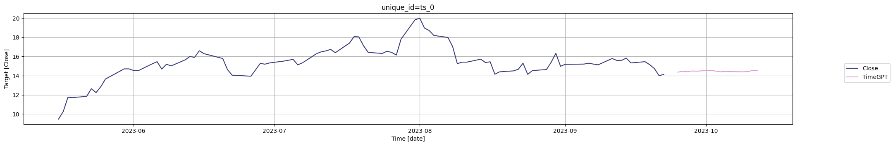
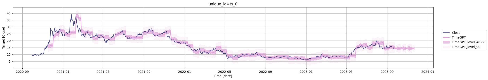
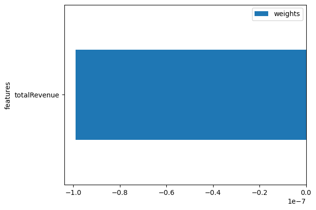

import os
import pandas as pd
from nixtlats import TimeGPTForecasting Time Series with Irregular Timestamps
timegpt = TimeGPT(token=os.environ['TIMEGPT_TOKEN'])The first step is to fetch your time series data. The data must include timestamps and the associated values. For instance, you might be working with stock prices, and your data could look something like the following. In this example we use OpenBB.
pltr_df = pd.read_csv('https://raw.githubusercontent.com/Nixtla/transfer-learning-time-series/main/datasets/openbb/pltr.csv')
pltr_df['date'] = pd.to_datetime(pltr_df['date'])pltr_df.head()| date | Open | High | Low | Close | Adj Close | Volume | Dividends | Stock Splits | |
|---|---|---|---|---|---|---|---|---|---|
| 0 | 2020-09-30 | 10.00 | 11.41 | 9.11 | 9.50 | 9.50 | 338584400 | 0.0 | 0.0 |
| 1 | 2020-10-01 | 9.69 | 10.10 | 9.23 | 9.46 | 9.46 | 124297600 | 0.0 | 0.0 |
| 2 | 2020-10-02 | 9.06 | 9.28 | 8.94 | 9.20 | 9.20 | 55018300 | 0.0 | 0.0 |
| 3 | 2020-10-05 | 9.43 | 9.49 | 8.92 | 9.03 | 9.03 | 36316900 | 0.0 | 0.0 |
| 4 | 2020-10-06 | 9.04 | 10.18 | 8.90 | 9.90 | 9.90 | 90864000 | 0.0 | 0.0 |
Let’s see that this dataset has irregular timestamps. The dayofweek attribute from pandas’ DatetimeIndex returns the day of the week with Monday=0, Sunday=6. So, checking if dayofweek > 4 is essentially checking if the date falls on a Saturday (5) or Sunday (6), which are typically non-business days (weekends).
(pltr_df['date'].dt.dayofweek > 4).sum()0As we can see the timestamp is irregular. Let’s inspect the Close series.
timegpt.plot(pltr_df, time_col='date', target_col='Close')
To forecast this data, you can use our forecast method. Importantly, remember to specify the frequency of the data using the freq argument. In this case, it would be ‘B’ for business days. We also need to define the time_col to select the index of the series (by default is ds), and the target_col to forecast our target variable, in this case we will forecast Close:
fcst_pltr_df = timegpt.forecast(
df=pltr_df, h=14, freq='B',
time_col='date', target_col='Close',
)INFO:nixtlats.timegpt:Validating inputs...
INFO:nixtlats.timegpt:Preprocessing dataframes...
INFO:nixtlats.timegpt:Calling Forecast Endpoint...
WARNING:nixtlats.timegpt:The specified horizon "h" exceeds the model horizon. This may lead to less accurate forecasts. Please consider using a smaller horizon.fcst_pltr_df.head()| date | TimeGPT | |
|---|---|---|
| 0 | 2023-09-25 | 14.365891 |
| 1 | 2023-09-26 | 14.460796 |
| 2 | 2023-09-27 | 14.413015 |
| 3 | 2023-09-28 | 14.488708 |
| 4 | 2023-09-29 | 14.470786 |
Remember, for business days, the frequency is ‘B’. For other frequencies, you can refer to the pandas offset aliases documentation: https://pandas.pydata.org/pandas-docs/stable/user_guide/timeseries.html#timeseries-offset-aliases.
By specifying the frequency, you’re helping the forecast method better understand the pattern in your data, resulting in more accurate and reliable forecasts.
Let’s plot the forecasts generated by TimeGPT.
timegpt.plot(
pltr_df,
fcst_pltr_df,
time_col='date',
target_col='Close',
max_insample_length=90,
)
You can also add uncertainty quantification to your forecasts using the level argument:
fcst_pltr_levels_df = timegpt.forecast(
df=pltr_df, h=42, freq='B',
time_col='date', target_col='Close',
add_history=True,
level=[40.66, 90],
)INFO:nixtlats.timegpt:Validating inputs...
INFO:nixtlats.timegpt:Preprocessing dataframes...
INFO:nixtlats.timegpt:Calling Forecast Endpoint...
WARNING:nixtlats.timegpt:The specified horizon "h" exceeds the model horizon. This may lead to less accurate forecasts. Please consider using a smaller horizon.
INFO:nixtlats.timegpt:Calling Historical Forecast Endpoint...timegpt.plot(
pltr_df,
fcst_pltr_levels_df,
time_col='date',
target_col='Close',
level=[40.66, 90],
)
If you want to forecast another just change the target_col parameter. Let’s forecast Volume now:
fcst_pltr_df = timegpt.forecast(
df=pltr_df, h=14, freq='B',
time_col='date', target_col='Volume',
)
timegpt.plot(
pltr_df,
fcst_pltr_df,
time_col='date',
max_insample_length=90,
target_col='Volume',
)INFO:nixtlats.timegpt:Validating inputs...
INFO:nixtlats.timegpt:Preprocessing dataframes...
INFO:nixtlats.timegpt:Calling Forecast Endpoint...
WARNING:nixtlats.timegpt:The specified horizon "h" exceeds the model horizon. This may lead to less accurate forecasts. Please consider using a smaller horizon.
But what if we want to predict all the time series at once? We can do that reshaping our dataframe. Currently, the dataframe is in wide format (each series is a column), but we need to have them in long format (stacked one each other). We can do it with:
pltr_long_df = pd.melt(
pltr_df,
id_vars=['date'],
var_name='series_id'
)pltr_long_df.head()| date | series_id | value | |
|---|---|---|---|
| 0 | 2020-09-30 | Open | 10.00 |
| 1 | 2020-10-01 | Open | 9.69 |
| 2 | 2020-10-02 | Open | 9.06 |
| 3 | 2020-10-05 | Open | 9.43 |
| 4 | 2020-10-06 | Open | 9.04 |
Then we just simply call the forecast method specifying the id_col parameter.
fcst_pltr_long_df = timegpt.forecast(
df=pltr_long_df, h=14, freq='B',
id_col='series_id', time_col='date', target_col='value',
)INFO:nixtlats.timegpt:Validating inputs...
INFO:nixtlats.timegpt:Preprocessing dataframes...
INFO:nixtlats.timegpt:Calling Forecast Endpoint...
WARNING:nixtlats.timegpt:The specified horizon "h" exceeds the model horizon. This may lead to less accurate forecasts. Please consider using a smaller horizon.fcst_pltr_long_df.head()| series_id | date | TimeGPT | |
|---|---|---|---|
| 0 | Adj Close | 2023-09-25 | 14.365891 |
| 1 | Adj Close | 2023-09-26 | 14.460796 |
| 2 | Adj Close | 2023-09-27 | 14.413015 |
| 3 | Adj Close | 2023-09-28 | 14.488708 |
| 4 | Adj Close | 2023-09-29 | 14.470786 |
Then we can forecast the Open series:
timegpt.plot(
pltr_long_df,
fcst_pltr_long_df,
id_col='series_id',
time_col='date',
target_col='value',
unique_ids=['Open'],
max_insample_length=90,
)
Adding extra information
In time series forecasting, the variables that we predict are often influenced not just by their past values, but also by other factors or variables. These external variables, known as exogenous variables, can provide vital additional context that can significantly improve the accuracy of our forecasts. One such factor, and the focus of this tutorial, is the company’s revenue. Revenue figures can provide a key indicator of a company’s financial health and growth potential, both of which can heavily influence its stock price. That we can obtain from openbb.
revenue_pltr = pd.read_csv('https://raw.githubusercontent.com/Nixtla/transfer-learning-time-series/main/datasets/openbb/revenue-pltr.csv')revenue_pltr.tail()| fiscalDateEnding | totalRevenue | |
|---|---|---|
| 5 | 2022-06-30 | 473010000.0 |
| 6 | 2022-09-30 | 477880000.0 |
| 7 | 2022-12-31 | 508624000.0 |
| 8 | 2023-03-31 | 525186000.0 |
| 9 | 2023-06-30 | 533317000.0 |
The first thing we observe in our dataset is that we have information available only up until the end of the first quarter of 2023. Our data is represented in a quarterly frequency, and our goal is to leverage this information to forecast the daily stock prices for the next 14 days beyond this date.
However, to accurately compute such a forecast that includes the revenue as an exogenous variable, we need to have an understanding of the future values of the revenue. This is critical because these future revenue values can significantly influence the stock price.
Since we’re aiming to predict 14 daily stock prices, we only need to forecast the revenue for the upcoming quarter. This approach allows us to create a cohesive forecasting pipeline where the output of one forecast (revenue) is used as an input to another (stock price), thereby leveraging all available information for the most accurate predictions possible.
fcst_pltr_revenue = timegpt.forecast(revenue_pltr, h=1, time_col='fiscalDateEnding', target_col='totalRevenue')INFO:nixtlats.timegpt:Validating inputs...
INFO:nixtlats.timegpt:Preprocessing dataframes...
INFO:nixtlats.timegpt:Calling Forecast Endpoint...fcst_pltr_revenue.head()| fiscalDateEnding | TimeGPT | |
|---|---|---|
| 0 | 2023-09-30 | 547264448 |
Continuing from where we left off, the next crucial step in our forecasting pipeline is to adjust the frequency of our data to match the stock prices’ frequency, which is represented on a business day basis. To accomplish this, we need to resample both the historical and future forecasted revenue data.
We can achieve this using the following code
revenue_pltr['fiscalDateEnding'] = pd.to_datetime(revenue_pltr['fiscalDateEnding'])
revenue_pltr = revenue_pltr.set_index('fiscalDateEnding').resample('B').ffill().reset_index()IMPORTANT NOTE: It’s crucial to highlight that in this process, we are assigning the same revenue value to all days within the given quarter. This simplification is necessary due to the disparity in granularity between quarterly revenue data and daily stock price data. However, it’s vital to treat this assumption with caution in practical applications. The impact of quarterly revenue figures on daily stock prices can vary significantly within the quarter based on a range of factors, including changing market expectations, other financial news, and events. In this tutorial, we use this assumption to illustrate the process of incorporating exogenous variables into our forecasting model, but in real-world scenarios, a more nuanced approach may be needed, depending on the available data and the specific use case.
Then we can create the full historic dataset.
pltr_revenue_df = pltr_df.merge(revenue_pltr.rename(columns={'fiscalDateEnding': 'date'}))pltr_revenue_df.head()| date | Open | High | Low | Close | Adj Close | Volume | Dividends | Stock Splits | totalRevenue | |
|---|---|---|---|---|---|---|---|---|---|---|
| 0 | 2021-03-31 | 22.500000 | 23.850000 | 22.379999 | 23.290001 | 23.290001 | 61458500 | 0.0 | 0.0 | 341234000.0 |
| 1 | 2021-04-01 | 23.950001 | 23.950001 | 22.730000 | 23.070000 | 23.070000 | 51788800 | 0.0 | 0.0 | 341234000.0 |
| 2 | 2021-04-05 | 23.780001 | 24.450001 | 23.340000 | 23.440001 | 23.440001 | 65374300 | 0.0 | 0.0 | 341234000.0 |
| 3 | 2021-04-06 | 23.549999 | 23.610001 | 22.830000 | 23.270000 | 23.270000 | 41933500 | 0.0 | 0.0 | 341234000.0 |
| 4 | 2021-04-07 | 23.000000 | 23.549999 | 22.809999 | 22.900000 | 22.900000 | 32766200 | 0.0 | 0.0 | 341234000.0 |
To calculate the dataframe of the future revenue:
horizon = 14import numpy as npfuture_df = pd.DataFrame({
'date': pd.date_range(pltr_revenue_df['date'].iloc[-1], periods=horizon + 1, freq='B')[-horizon:],
'totalRevenue': np.repeat(fcst_pltr_revenue.iloc[0]['TimeGPT'], horizon)
})future_df.head()| date | totalRevenue | |
|---|---|---|
| 0 | 2023-07-03 | 547264448 |
| 1 | 2023-07-04 | 547264448 |
| 2 | 2023-07-05 | 547264448 |
| 3 | 2023-07-06 | 547264448 |
| 4 | 2023-07-07 | 547264448 |
And then we can pass the future revenue in the forecast method using the X_df argument. Since the revenue is in the historic dataframe, that information will be used in the model.
fcst_pltr_df = timegpt.forecast(
pltr_revenue_df, h=horizon,
freq='B',
time_col='date',
target_col='Close',
X_df=future_df,
)INFO:nixtlats.timegpt:Validating inputs...
INFO:nixtlats.timegpt:Preprocessing dataframes...
INFO:nixtlats.timegpt:Calling Forecast Endpoint...
WARNING:nixtlats.timegpt:The specified horizon "h" exceeds the model horizon. This may lead to less accurate forecasts. Please consider using a smaller horizon.timegpt.plot(
pltr_revenue_df,
fcst_pltr_df,
id_col='series_id',
time_col='date',
target_col='Close',
max_insample_length=90,
)
We can also see the importance of the revenue:
timegpt.weights_x.plot.barh(x='features', y='weights')<Axes: ylabel='features'>
Give us a ⭐ on Github